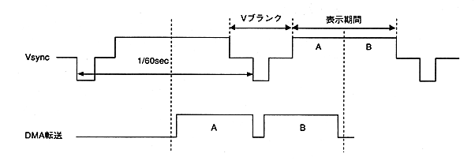

● Import from video source
When capturing video into a QuickTime file, input the material (video deck, camera, laser disc, etc.) to the QuickTime application via the Macintosh video capture board.
To get the best image quality, capture as uncompressed video as possible. To capture without compression, use the VCR control board to capture one frame at a time. To capture in real time without compression, you can either use a high-speed hard disk (DiskArray type) or write it to the hard disk once it has been captured in RAM. For the operation method, refer to the manual of the device to be used.
● Importing from Macintosh graphic sources
if you have a Macintosh file format still image (PICT format)
Create a QuickTime file using the MovieConverter utility.
● Importing from digital materials other than Macintosh
Use the DeBabelizer utility program to convert non-Macintosh files (graphic data from workstations and other PC machines) to QuickTime format.
● Sound capture
Record in AIFF format via a Macintosh sound board. For digital sound such as DAT, use the waveform editor of the sound tool provided by SEGA to record on the hard disk and resample to the desired sampling frequency.